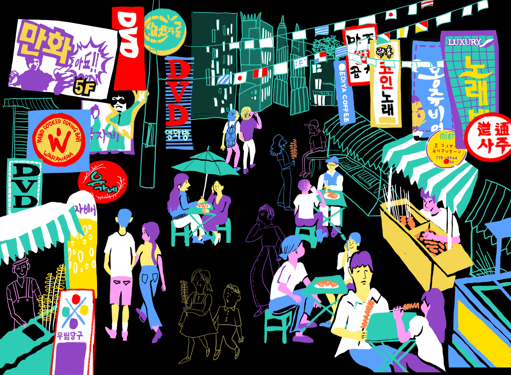
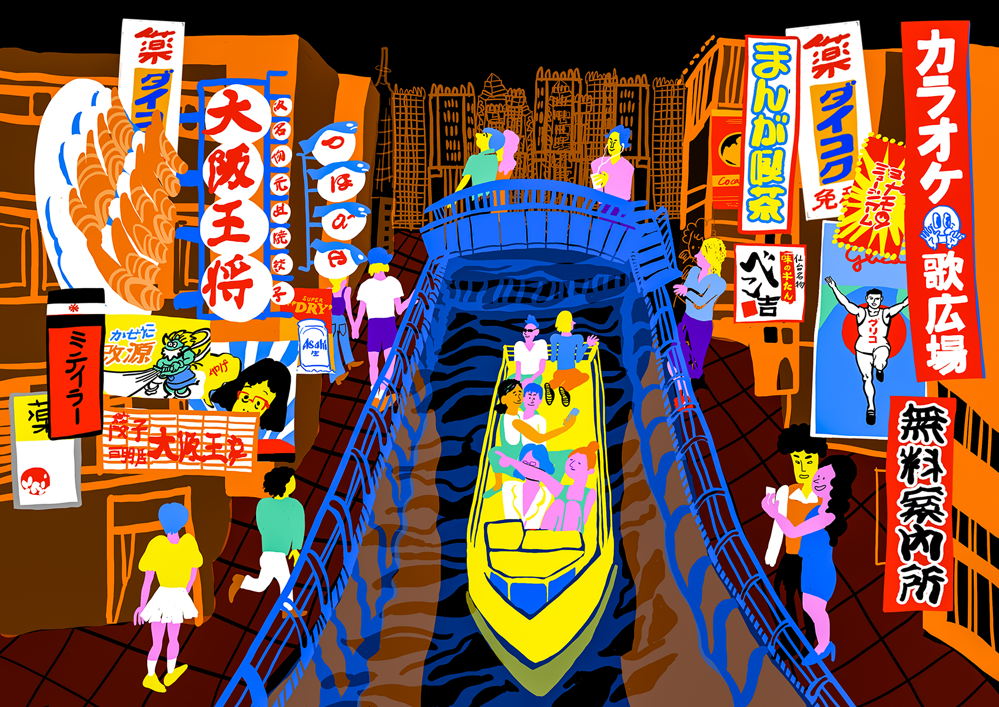

The Night of Seoul” is a digital illustration that shows the dynamic and restless energy of Seoul's nightlife. Every time I walk through the streets of Seoul at night, I always get fascinated by the city’s lively spirit full of vibrant lights, youth, and of course, delicious street foods. The wide range of neon line drawings accurately depicts the dazzling nightlife of Seoul and adds visual emphasis and contrast between the pitch-black night sky and the atmosphere of the city. The repetition of lines creates visual rhythm and harmony in the overall composition to represent the festive mood of the scene.
The Night of Seoul, 2022
The Night of Seoul” is a digital illustration that shows the dynamic and restless energy of Seoul's nightlife. Every time I walk through the streets of Seoul at night, I always get fascinated by the city’s lively spirit full of vibrant lights, youth, and of course, delicious street foods. The wide range of neon line drawings accurately depicts the dazzling nightlife of Seoul and adds visual emphasis and contrast between the pitch-black night sky and the atmosphere of the city. The repetition of lines creates visual rhythm and harmony in the overall composition to represent the festive mood of the scene.

“The Night of Osaka” is a visual extension of “The Night of Seoul” as it portrays and narrates another jubilant cityscape with a similar illustration style but with a different background setting. When I visited Japan, I was mesmerized by the clean, organized streets filled with tourists and locals enjoying their moment and time with the surroundings. Similarly, the city’s festive atmosphere is captured by the unified repetition of the well-organized buildings and vibrant signboards; the overall orange hue permeates throughout the composition to illustrate the youthful Japanese nightlife.
The Night of Osaka, 2022
“The Night of Osaka” is a visual extension of “The Night of Seoul” as it portrays and narrates another jubilant cityscape with a similar illustration style but with a different background setting. When I visited Japan, I was mesmerized by the clean, organized streets filled with tourists and locals enjoying their moment and time with the surroundings. Similarly, the city’s festive atmosphere is captured by the unified repetition of the well-organized buildings and vibrant signboards; the overall orange hue permeates throughout the composition to illustrate the youthful Japanese nightlife.

Elephant and the Star, 2022
I've always lived by a strong moral code: don't exploit other people's happiness for your own gain, and learn to appreciate your genuine self. Growing up, I’ve seen numerous incidents in the media where powerless people are often dominated by greed and authority. To leave an indelible imprint on children’s minds that personal greed and dominance can impact the lives of powerless people, I’ve endlessly pondered how to efficiently deliver this message from a child’s perspective. This was through including approachable aspects like elephants and stars with concepts such as hope and greed.

Elephant and the Star, 2022
In The Elephant and the Star, an illustrated children’s book that I designed, an elephant realizes his desire to collect all the stars in the sky has darkened the night for others. To make the book visually comfortable for young readers, the gentle texture of Hanji, a traditional handmade Korean paper, was used along with the pastel hues that combine these illustrated elements in a harmonious way.

Afghan Refugee Crisis, 2022
In this booklet, I incorporated infographics and collages to visualize the tragic story of Aakeen, a young Afghani refugee dreaming of immigrating to the United States. As the immigration process for refugees is often very complicated, controversial, and politicized, the actual chance of successful immigration progress is very slim. Throughout the composition, I poetically portrayed Aakeen’s harrowing experiences in various forms. The fractured shapes in the collages represent the juxtaposition of disheartened emotions and harsh political conflicts that Aakeen had to suffer during the wake of war. Yet, various colors and textures reflect a sense of hope for Aakeen before the reality of war crushes her dreams.

Altruistic Mind Magazine, 2022
This infographic booklet details one of the most severe refugee situations in recent history, caused by the Russo-Ukrainian War. Within the piece, I focused on conveying the tragic reality of the war with graphic elements and typography. I utilized the Ukrainian language as the main typographic background for the anti-war narrative. Moreover, the yellow color serves as a visual emphasis in the overall composition and creates a controlled flow of information for the reader. The variety of sizes in the texts creates a visual hierarchy and each graphic element serves as a visual guide that aids the viewer's comprehension. The stark contrast of the white illustrations—especially those of maps, firearms, land, and people—stands out against the black background making this a dominant and powerful booklet that leaves an indelible imprint on the audiences' minds.